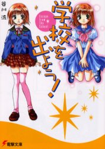
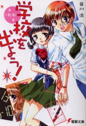
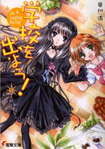
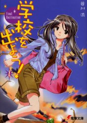
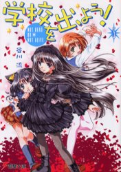
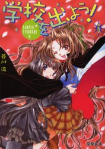
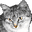

  
  
同じ作者の涼宮ハルヒシリーズを読んでから、この本を読みました。意外にも学校の図書館にあったので、読んでみた。ていうかこの時初めてライトノベルを図書館で借りました。
感想としてはなんだか微妙でしたが、話の内容は悪くありませんでした。
こんな絵ですが、内容としてのSF設定は意外とすごい。
まずは第一巻の表紙をご覧いただきたい。右でふわふわ浮いているのが幽霊の春奈。左が若菜である。
この愛らしい姿に萌えてしまった人は何人いるだろうか。私もその一人です。
表紙買いではなく、作者買いをしたときにこれを買いました。
とりあえず、谷川流先生の作品はすべてそろえています。
実はわたし、猫好きです。
登場人物の蒼ノ木類のキャラクターに出会ってからさらに猫好き度が増しました。詳細の通り、彼女は猫使い。
表紙に絵が載ってないところが残念でなりません。